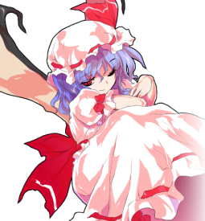
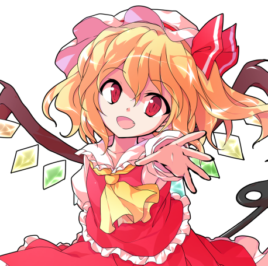
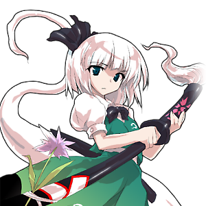
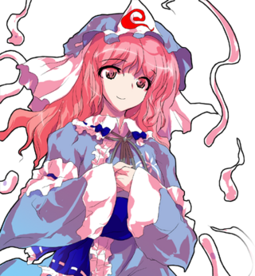
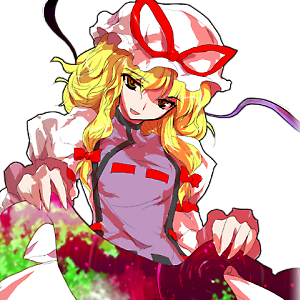

Personagens de Touhou
· Touhou é uma das franquias com maior número de personagens que existem. Se for contar todos os tipos de mídia, os personagens somam mais de 180. Então, decidi mostrar apenas os mais famosos entre os fãs e alguns dos meus favoritos pessoais.
«PÁGINA ANTERIOR PRÓXIMA PÁGINA»Remilia Scarlet
Remilia Scarlet é a dona e líder da Mansão do Demônio Escarlate, mestra de Sakuya e irmã mais velha de Flandre. Apesar de sua aparência frágil e infantil, Remilia tem poderes mágicos assustadores e uma reputação a defender, sendo conhecida por Gensokyo como o perigoso Demônio Escarlate. Como todos os vampiros, ela tem alta sensibilidade à luz e enfraquece com a exposição à luz solar, então ela tipicamente fica dentro da mansão durante o dia e sai durante a noite.
Flandre Scarlet
Flandre Scarlet é a irmã mais nova de Remilia, vivendo na Mansão do Demônio Escarlate. Por causa de sua personalidade instável e inacreditável poder de destruição, sua irmã ordenou que ela não deixa-se a mansão por aproximadamente 500 anos. Flandre geralmente é calma e comportada, mas muitas vezes descrita como "meio doida". Embora não fique braba com frequência, ela é bem instável, o que complica outras pessoas de entenderem ela.
Youmu Konpaku
Youmu é uma das entidades mais estranhas em Gensokyo, parte humana e parte fantasma ao mesmo tempo. Youmu tem uma personalidade direta e focada, que completam muito bem suas habilidades com espada. Porém, sua personalidade entra em conflito com a de sua mestra, Yuyuko Saigyouji, que tem uma natureza excêntrica e muito brincalhona. Mesmo assim, ela serve Yuyuko o melhor que pode, cuidando dos jardins em Hakugyokurou e seguindo suas ordens.
Yuyuko Saigyouji
Yuyuko Saigyouji é a princesa fantasma de Hakugyokurou, o sub mundo dos "ex-vivos", costumava ser humana, mas cometeu suicídio por causa de seu poder absoluto. Ela tem o poder de convidar as almas dos mortais para a morte, as almas que perecem dessa forma vão para o Hakugyokurou, ao invés do céu ou inferno. Os humanos temem Yuyuko por causa de seu poder assustador e seu medo comum pelo sobrenatural, mas ela é bem alegre e amigável.
Yukari Yakumo
Yukari Yakumo é uma das mais antigas, sábias e poderosas youkais de toda a Gensyoko. Mais velha do que a história de Gensyoko em si. É conhecida por ser um youkai muito preguiçosa, gostando de dormir e gastar o dia fazendo nada. Ela costuma brincar com seus oponentes, raramente os levando a sério, mesmo assim, Yukari possui um intelecto invejável, possuindo muita sabedoria e conhecimento de vários anos de bagagem.
«PÁGINA ANTERIOR PRÓXIMA PÁGINA»
All rights belong to Team Shanghai Alice ©